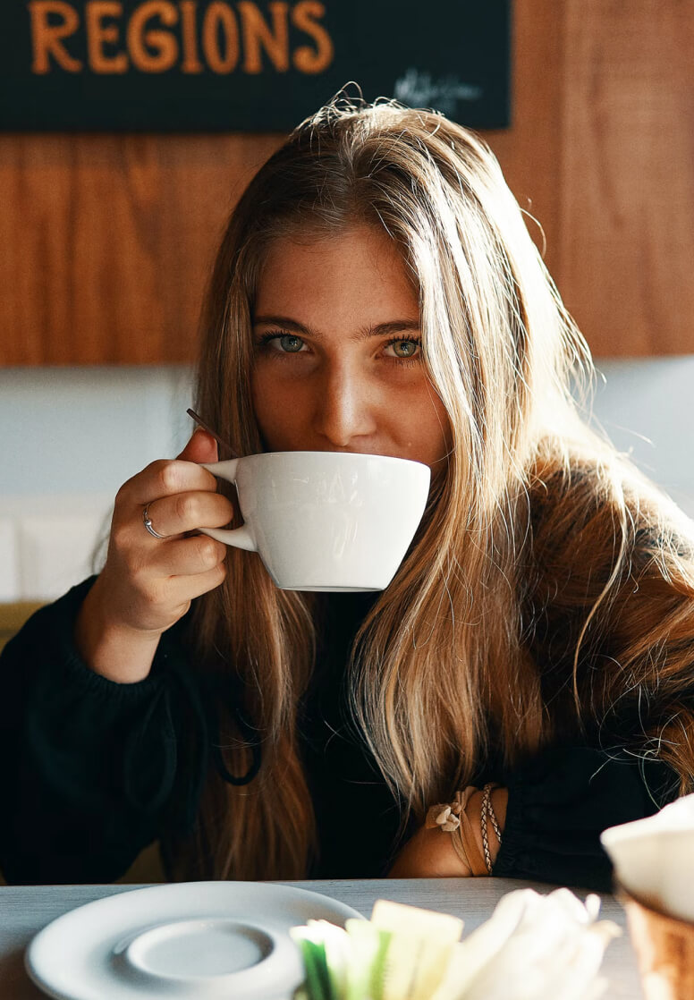

Experience coffee like never before
We craft more than beverages; we curate memories, one flavorful moment at a time. Embrace the aroma and let every visit be a chapter in your coffee story.
Welcome to My Coffee House
EXPERIENCE A NEW WAY TO TASTE COFFEE


What we Offer
Why visit us?

Fair Trade Coffee
We build direct relationships with the farmers and producers who help in the development of delicious, sustainable and organic coffee.

Local baked goods
We use local products to bake our goods and bring in a variety of treats from local bakers with our community.

Made with love
We value our customers and make it our priority to serve everyone with respect and a friendly smile to start their day of right.

Our Menu
Explore what we have to offer you
Locations
Find your nearest coffee shop

About Us
Read our story
In the heart of our community, My Coffee House emerged as a humble local coffee shop that sought to redefine the coffee experience. Founded with a passion for quality brews and a commitment to fostering genuine connections, we embarked on this journey with a vision to create a warm and inviting space for coffee enthusiasts and casual patrons alike. My Coffee House quickly became a cherished gathering spot, where the rich aroma of freshly ground coffee beans mingled with the laughter of friends and the tapping of keyboards from those seeking a cozy workspace.
Testimonials
What our customers say about us
"I always make a point to visit My Coffee Company when in Ottawa. Delicious coffee and friendly service."
Jane D., Toronto

"Great atmosphere to get some work done while enjoying a cup or two of incredible coffee."
Scott S., Ottawa

"Best coffee in Ottawa and the service is top notch. Would highly recommend a visit."
Susie F., Ottawa